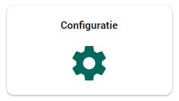
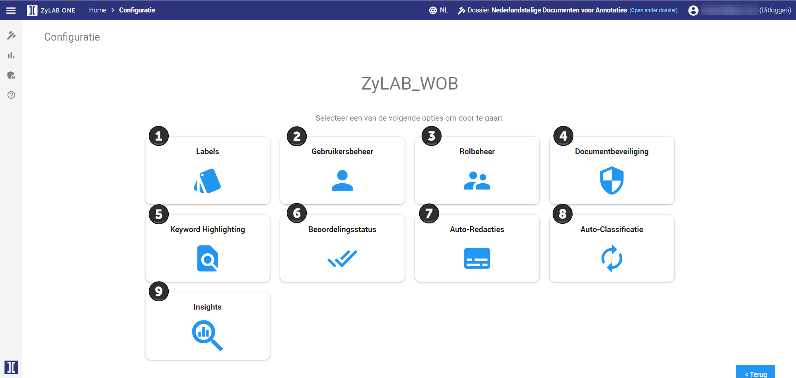

Het Configuratie dashboard
Als beheerder zult u veel werken met het configuratie dashboard. Zie de uitleg hieronder voor
uitleg over de knoppen.
Klik eerst in het Woo dashboard op de knop Configuratie.


- Hier kunt u labels toevoegen, aanpassen of verwijderen. Meer informatie
hierover vindt u in het topic Voortgang bijhouden door middel van labels.
-
Hier kunt u rollen aan gebruikers toevoegen, aanpassen of verwijderen. Meer informatie hierover vindt u in het topic Rol en Gebruikersbeheer.
- Hier kunt u
rollen toevoegen, aanpassen of verwijderen. Meer informatie hierover vindt u in het topic Rol en Gebruikersbeheer.
- Hier kunt u extra beveiliging toevoegen aan uw documenten.
Meer informatie hierover vindt u in het topic Documentbeveiliging.
-
Hier kunt u trefwoorden laten highlighten in al uw documenten. Meer informatie hierover vindt u in het topic Onderwerpen highlighten.
- Hier kunt u instellen wanneer een
document als Beoordeeld wordt aangemerkt. Meer informatie hierover vindt u in het topic Beoordelingsstatus.
- Hier kunt instellen wanneer informatie automatisch wordt afgelakt. Meer informatie hierover vindt u
in het topic Automatisch aflakken.
- Hier kunt u documenten die u hebt geüpload
automatisch laten classificeren met behulp van labels. Meer informatie hierover vindt u in het topic Automatisch labelen.
- Hier kunt u documenten die u hebt geüpload automatisch laten classificeren met behulp van labels. Meer informatie hierover vindt u in het topic Insights (Engels).